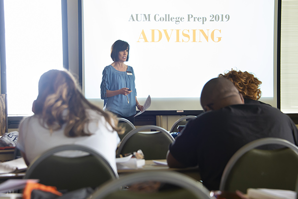

Advising

Academic advisors serve an important role in helping students get registered for classes and guiding them along their educational journeys. Not only will your advisor assist you in selecting the classes you need for graduation, he/she can also serve as a resource to you for any questions you may have during your time at AUM.
Upon admission to AUM, you are assigned an advisor based upon your major. These advisors are located in various offices across campus. If you are not sure who your advisor is or how to get in touch with him/her, please contact us.
You may find this additional information helpful:Declared Major Advising
If you are fully admitted to AUM and have declared a major, you are advised in the college or department in which the major falls. Students with less than 59 hours in the College of Liberal Arts and Social Sciences and the College of Science are initially advised in the Office of Central Advising before transitioning to a faculty advisor.
Please remember:- We require that you meet with your academic advisor before registering for classes so you can select courses that comply with your specific program/major requirements.
- Your advisor will also want to talk to you about your overall academic progress.
- Once your advisor gives signed approval for courses, you will obtain a personal identification number (PIN) that allows registration on AUM’s online registration system.
- You should plan to meet with your advisor in person prior to each semester unless you are seeking a degree fully online.
Please feel free to contact Dr.Virginia Lacy if you are undeclared with deciding your major!